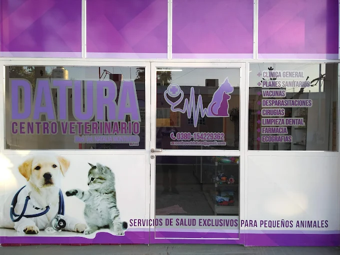
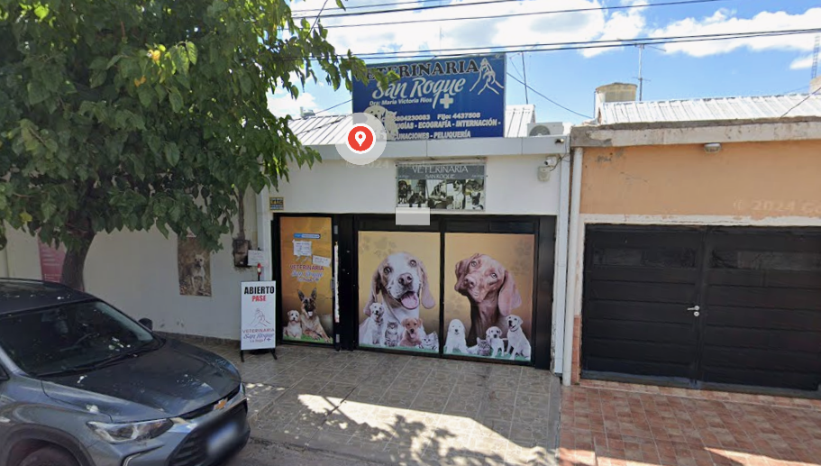
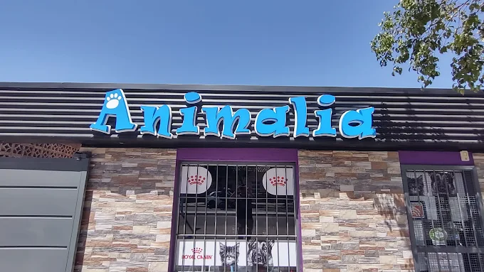
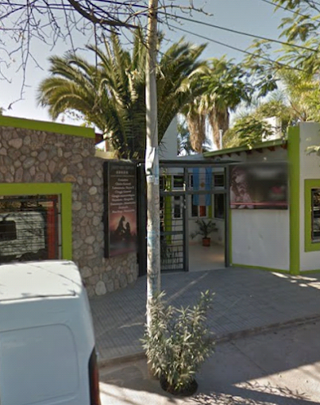
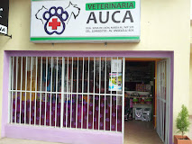
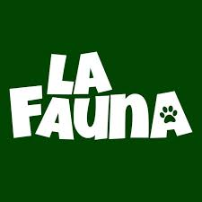
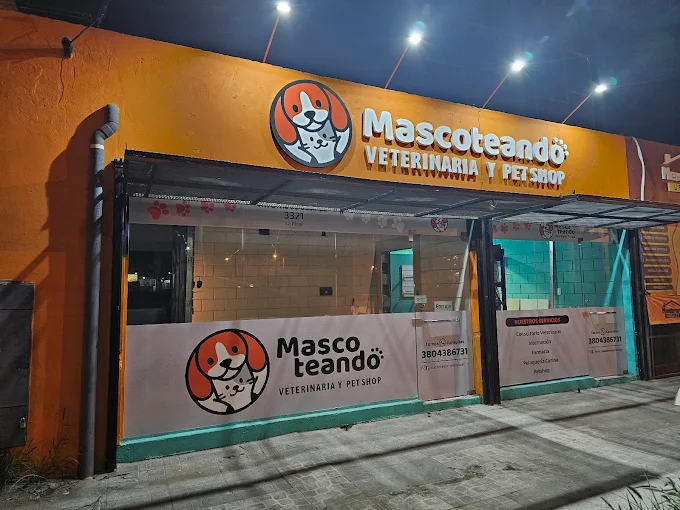
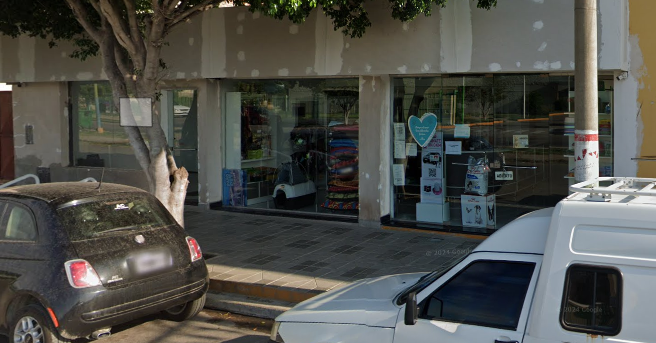
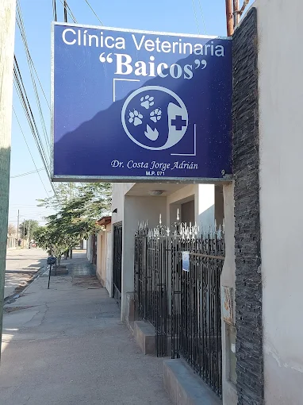
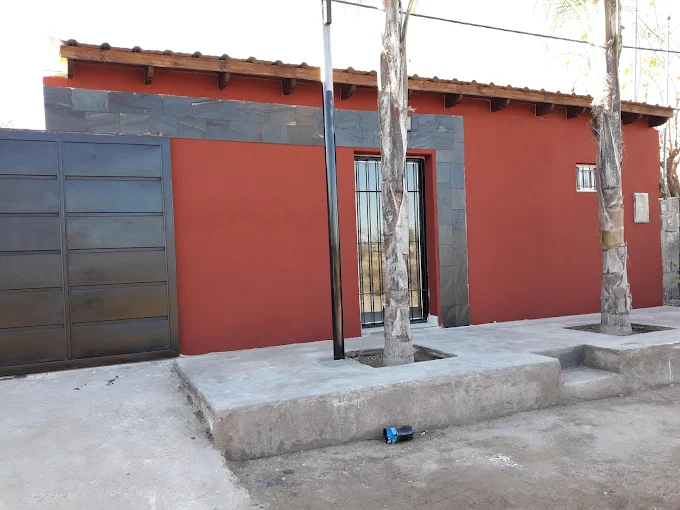

Veterinaria Datura
Dirección: España 590, (zona Centro)
Tel: 3804 229 362
(Zona Centro)

Veterinaria Clínica y Oftalmología San Roque
Dirección: Atenas 2299-2399
Tel: 3804 230 083
(Zona Centro)

Veterinaria Animalia (Dr. Sosa Javier Alejandro)
Dirección: Rivadavia casi Perú / Rivadavia 1021
Tel: 0380 443-4648
(Zona Centro)

Mundo Animal (Dr. Jiménez)
Dirección: (registrada en listados locales)
Tel: +54 380 452-8396
(Zona Centro)

Sanatorio Animal
Dirección: 1 de Marzo 508
Tel: 380 442-2001
(Zona Centro)

Veterinaria Auca
Dirección: Av. Monseñor E. Angelelli 404
Tel: 3804 685 799
(Zona norte)

Veterinaria La Fauna
Dirección: Hipólito Yrigoyen 280
Tel: 3804 859 119
(Zona norte)

Mascoteando Veterinaria Pet Shop
Dirección: Av. Ortiz de Ocampo 3321
Tel: 3804 386 731
(Zona norte)

Rex Veterinaria
Dirección: Av. Los Incas 1112
Tel: 3804 465 272
(Zona oeste)

Veterinaria Sitjar
Dirección: Av. Laprida 500
Tel: 3804 420 650
(Zona Oeste)

Clínica Veterinaria Baicos (Costa Jorge Adrián)
Dirección: Dr. Juan Olsacher 2821
Tel: 3804 456 198
(Zona sur)

Veterinaria Pata Pata
Dirección: Calle Villa Regina s/n, Barrio Eduardo Menem 1
Tel: 3804 555 399
(Zona Sur)